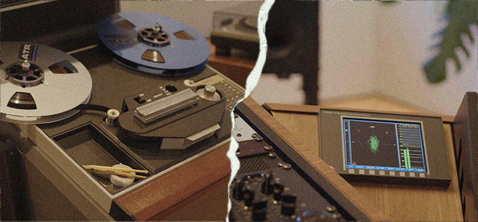

"T
he mastering field started out as the guy, and occasionally the girl, in the backroom, literally in a freaking closet, with a lathe, figuring out how to get this music work on disc. Basically just an operator or a transfer engineer. Those engineers then worked out that they could improve the way those recordings sounded using basic tools like EQs or filters and compression. The big jump happened when George Massenburg and Burgess Macneal invented parametric EQ. People realized, 'oh, you can actually make recordings sound incredible when you cut them to disc using these new tools.'"
"The next leap was when Doug Sax took mastering out of the backroom and started an independent facility, and turned it into more of a boutique approach, where he could be even more creative and intuitive. But as the field of mastering has developed, there's still this sense of, 'oh, it's just that person at the end of the chain, making it loud.' That old school idea hasn't caught up with the advancements in mastering. We are still not seen as creatives."
"The reality is, we have so many unbelievable tools now that allow us to do many different things, it's amazing. How we use these tools is project- and relationship-dependent. Today mastering a record can take many shapes, depending on what is needed: from getting a perfect mix from a brilliant mixer where mastering moves are extremely subtle and transparent, to bedroom mixes that might have technical issues that need to be solved, to real collaborative efforts, and in rare cases even mixing, as I did with Björk."
1. INTRODUCING HEBA KADRY
Heba Kadry is one of America's most high-profile mastering engineers, with a credit list that contains an unusual amount of alternative, avant-garde and leftfield artists, as well as more mainstream artists. The list includes names like Squid, Andy Bell, Alex G, Animal Collective, Mdou Moctar, Ryuichi Sakamoto, The Mars Volta, Diamanda Galás, Brockhampton, Maxïmo Park, Narada Michael Walden, Deerhunter, Coma, Cate le Bon, the above-mentioned Björk, and countless more.
“What I do is not normally about making the next hit. I don't care about that at all. Instead it's about making great art that can change minds.”
"One day I'm working on the grimiest noise music," comments Kadry, "the next day on a modern classical recording, and the day after that Indie rock. It's really nice to have that variety. I listen to many types of music from all over the world, so if I was working on the same music every single day, I would get super bored. I need that variety. Being a mastering engineer is like being the ultimate crate digger. I get exposed to a rich variety of sounds and am the first to hear it. It's something I really love about my job."
"What I do is not normally about making the next hit. It's not hinging on how many streams or awards it's going to get. I don't care about that at all. Instead it's about making great art that can change minds, and working with artists that are doing something really interesting and in some cases not very commercial. There's more room for creativity with those records because there's nothing to lose. It is usually those records that artists and engineers email me about years later, telling me how a record changed their life and how they are using it as a reference."
"Most of the music I work on is not made by the same handful of people that are writing, mixing and mastering 80% of commercial pop songs on the charts, making everything sound very similar. I love that with the independent scene the sounds are sourced from all over the place with collaborations between producers and musicians from all over the world. It's more of a community. The artist might have friends that are producing a few songs on their record. One song may be mixed by a well-known mixer, and the rest by their friends, or themselves, or an up and coming mixer. There's much more variety and often my role is to make it feel like an expansive record and bring it all together."
2. EARLY INFLUENCES
Heba Kadry's position at the forefront of the mastering world, and her varied tastes in music, are the result of an unusually long and winding road, which started more than two decades ago in her native Cairo, and ended up in Brooklyn, New York. The combination of Kadry's Egyptian roots and her American experiences are at the heart of her multi-genre, multi-faceted approach. She takes her compelling story from the top.
"My family's background is rooted in science and engineering, my mother being a chemist and my father a civil engineer. It was my grandfather who instilled a deep love of music in me. He was a mathematician and engineer with a profound love of classical music, both European and Arabic. He'd have his Turkish coffee and a cigarette during the classical hour every Saturday on Cairo radio. I have a very strong memory just sitting with him, listening to and absorbing music with my full attention. It was holy and a time not to be disturbed with chatter. It's my first exposure to actively listening to music."
"Living in a noisy, chaotic city like Cairo I had never experienced what it's like to step into a quiet, acoustically-calibrated room."
"I studied classical piano and took lessons, on and off. At some point my dad bought me a Casiotone 610, the first stereophonic synth that Casio made. I could tinker with that for ages. My dad was really into synth reworkings of classical music, like Wendy Carlos' Switched On Bach (1968). That instilled a love of love of synthesizers in general in me. My mother loved Arabic greats like [singer] Oum Kalthoum who is on heavy rotation in our household. As much as music was crucial in our household, it wasn't something I ever considered pursuing. It was somewhat frowned upon, especially as a woman."
"I got a BA in Business Administration and minored in Theatre at The American University in Cairo, and I played in a few bands in college. Right out of college I got an internship at an ad agency and eventually got hired as an account executive. I absolutely hated the job but it got me exposed to the world of video production and composing jingles for ads."
"One day I was hired to record a jingle so we booked a session in one of the bigger studios in downtown Cairo called Studio Leila. They had a Neve VXS, Genelec monitors and a lot of outboard (the studio has since sadly burned down). Entering that studio was a life-altering experience for me. Living in a noisy, chaotic city like Cairo I had never experienced what it's like to step into a quiet, acoustically-calibrated room. When I saw the engineer at work, I was mesmerized and I wanted to figure out how to do what he did. He gave me the best advice: go to audio school first."
3. THE RECORDING WORKSHOP
The advice from the engineer at Studio Leila led Kadry to the US, to The Recording Workshop, which is located in the middle of nowhere in Ohio, an environment that could not have been more different from Cairo. However, the shockingly cold winter weather and remote, rural location did not distract Kadry from her calling.
"I realized that I had to travel. This was pre-YouTube tutorials, and I didn't have access to Pro Tools. I also saw audio as sort of an escape from my fate as a young woman from Egypt, where there were minimal opportunities. Coming to the States was like, 'oh, wow, freedom!'"
"The Recording Workshop ran the cheapest and shortest program that I could afford, and it was great. As far as I know, it was the first audio school in America, it started in the seventies. I was there 2002-3, and I learned all the basics about audio, and I am probably one of the last generations that learned how to use analogue tape."
"I had such a great time at TheRecW. When I was done with the program, my parents expected me back, but I was not ready to do that. Instead, I decided to see how far I could stretch this audio thing. So I got an internship at SugarHill Recording Studios in Houston, Texas, the oldest continually operating studio in the US since 1948. It was a wonderful studio steeped in history and run by great people."
"The studio was totally decked out, with Allen & Heath GS3000 and Neotek Elite consoles, Otari MTR90 and JH 2" 24-track tape machines, an incredible mic collection, two live rooms and two chambers. I interned there for about eight months, while working at a retail clothing store on a minimum wage, until I finally got hired as a midnight-to-dawn engineer and admin assistant. I absolutely loved being at that studio and had many opportunities to learn everything about tracking and how to run a multi-room studio."

4. EGYPT TO OHIO
Kadry's move from Cairo to rural Ohio clearly had been a daring jump straight into the deep end. Having learned to swim, her next jump was also audacious. "It was another one where I was like, 'Hey, I don't know what this is. Let me go after that.' Complete gumption, naivety. Which in hindsight was probably a good thing."
"I had attended a mastering panel at a conference in New Orleans in 2004, and heard Greg Calbi talk, and was very impressed. After that conference I started hanging out with the in-house mastering engineer at a mastering facility adjacent to SugarHill called Essential Sound. The more I learned about mastering, the more I felt drawn to it. I reckoned that to become really good at mastering, I'd have to go to New York, so I moved there in 2007. I was hinging all of my hopes and dreams on this thing."
Kadry got an internship at a mid-sized mastering studio in Manhattan, and eventually got hired, but was "sucked into only doing admin work." After a few years she would master friends' singles on the weekends when the engineers were gone. At some point producer Chris Coady asked Kadry to do some mastering for a low budget EP he had worked on for Baltimore band Thank You. The EP was to be released on Chicago label Thrill Jockey. Kadry jumped at the opportunity.
This lead to more mastering work from Thrill Jockey, and she gradually built a profile as a mastering engineer within the indie scene. After 6 years of working at the mastering studio in the city, Kadry went into partnership with Timeless Mastering in Brooklyn. In 2019, she left Timeless and built her current mastering studio. Looking back on her trajectory, she acknowledges that becoming a mastering engineer is not straightforward.
"It is really hard to get into mastering. The path is not very clear, and there's not much demand for entry-level engineering positions in mastering, because it's a hyper-specialized aspect of the industry, and the margin for error is extremely low. You can't make any mistakes. Bringing in an assistant or an intern opens up the door to more errors, so mastering studios are a little bit more reticent with hiring engineering assistants. In my case I had to create my own path."
5. ALTERNATIVE NY
Kadry puts her success, and also her reputation for working with left-field artists, in part down to being in Brooklyn during the 2010s. It was, she says, "a time of a lot of creativity, and artists and labels doing really cool things, particularly in the niche world of electronic experimental music. What's great about coming up as part of a community is that when someone does well, they bring others with them for the ride. Many of the people I worked with ten years ago, I still work with today!"
"It also meant that I cut my teeth mastering many records that were not perfect sonically but had so much character that getting to finish them really helped me develop my mastering skills. You get really good at making imperfect mixes sound pretty decent, and by the time you get fantastic mixes, you know not to do too much."
"There are of course records where people ask, 'just make it loud,' and that's cool too. Mastering records loud and making them sound good is probably the hardest aspect of the job. You eventually get good at it and figure out techniques to get a record to feel huge, and make sure it does not fatigue you or sound dated after 10-15 years."
"You get really good at making imperfect mixes sound pretty decent, and by the time you get fantastic mixes, you know not to do too much."
"Of course, by nature as human beings we like loud stuff. We have been having the loudness debate forever. During the jukebox area people wanted their 45s to sound louder than other 45s, which contributed to the development of the limiter. But while there is an inherent need for loudness, there isn't so much of a macho loudness competition in the music I tend to work in. And some mixes just can't handle loudness, because of the way they are compressed or how dense the arrangement is."
"It's not that the indie labels I often work with don't care about loudness. In fact, it can be quite the opposite. Some records are loud to the point of utter blazing distortion and clipping. Examples that spring to mind are Merzbow records or more recently Low's album Double Negative which employs saturation and distortion in an intentional and very emotive way."
"Every mix has a loudness potential based on the arrangement and the mix, and contrary to pop mastering, there isn't really a bottom line that I have to meet as a mastering engineer. There really isn't. The labels are, for the most part, very hands-off. No one cares about what's expected and what the standards are. The aim is instead to do something really, really cool. As a listener, I really love these kind of records, with people pushing the boundaries"
6. STUDIO IN DUMBO
Kadry's current mastering space is located in an industrial building in the Dumbo neighborhood (Down Under the Manhattan Bridge Overpass), in Brooklyn. Her main space is huge, cozy, and light-filled, and looks like a large living room. She elaborates on the ins and outs of her room, and on the gear she has in it.
"My studio was built by Jim Keller, and his company Sondhus. The room is about 450 square feet (41m2), which is pretty big for a mastering room, and is thickly framed with absorption panels and tuned membranes in the walls, as well as 3 pitched window inserts so I get lots of daylight. My ceiling cloud panels are shaped as a 16-point hexagonal geometric Islamic Arabic design, all tiled together. I wanted something subtle that reflects a little bit of who I am."
"My monitors are ATC 150SCM's with a pair of subs. I'm a believer in one pair of monitors in a very tuned, well-calibrated room. I also have a beautiful custom Northward Acoustics mastering desk designed by the brilliant Thomas Jouanjean to counter first reflections and be as acoustically transparent as it can be."
"To be a good mastering engineer, you have to have an excellent monitoring environment, and all the mastering rooms that I worked in prior had a lot of problems. We figured out ways to compensate for these problems, and when I started working in my new room, I realized, 'Oh, I actually have to work harder now,' because I can hear every flaw. I now have implicit and complete trust in my room in a way that I never had before"
7. SEQUOIA
The main DAW Kadry works in is Sequoia by Magix. "I still learn new things I can do with it every day. It's like a Swiss army knife. It's an extension of me. I know exactly how to get what I want from it. For example, the Object Editor is an amazing tool that can use non-proprietary plugins and create snapshots of a particular chain."
"You can easily glide from verse to chorus to bridge and save snapshots of your plugins that you can instantly recall, based on what section you need to treat, whether it's to fix problems in particular sections or to elicit an emotional lift. It's a great nuanced way to master, as opposed to making global moves. It's sort of like micro-automation on a stereo mix"
"I have a template, and start my process by lining up all my source mixes and doing prep work in Sequoia. I may be working on gain structure or creating a bit more width in the choruses, fixing sibilance or pesky resonant bass notes and so on."
"Another thing that is really great about Sequoia is the Comparisonics, which displays audio on the waveform on a frequency spectrum using different colors. Darker colors are lower frequencies and lighter colors, higher. I can easily see exactly when the kick transient begins, or see specific types of sibilance. Ss or Tch or K sibilances all have particular colors, depending on the vocal."
"My Sequoia system goes to my Lynx Aurora (n) 24 AD/DA converter, which hits my mastering console and after going through my chain the signal is captured back in Sequoia via the Lavry Gold A/D 122. The tracks are then sequenced together and production parts finalized for digital, CD, cassette, or LP."
8. HANDS ON EQUIPMENT
While Kadry is passionate about her Sequoia software, she stresses that her two tape recorders and extensive outboard collection are an essential part of her process. She has an Ampex ATR-102 and an Ampex ATR-104, completely restored by Dan Labrie of Myriad Magnetics, that are mostly used for layback mastering, aka 'laying back to tape.' With regards to the outboard in her console, she describes the what, how and why…
"I have a Manley Massive Passive, and a rebuilt pair of Neumann OE Duos, old EQs from a Neumann mastering console, which I love. I also have the Neve Portico II Master Bus, many Dangerous Music units including the Monitor, Master, Liaison and Compressor, Maselec MLA-2 compressor, the Maselec MEA-2, Sontec 432 D-9 EQ, plus a whole rack of Gyraf units, designed by Jakob Erland, who is a genius in my opinion. Gyraf Audio is a Danish company, and one of my favorite pro audio companies right now."
"With things often being mixed in the box now, people request and depend on the mastering process to bring all the color back."
"I particularly like the Gyraf Gyratic 21 Magneto-Dynamic Infindibulum, which is a passive clipper, and a really clever saturation multi-band tool. Erland took an old 50's circuit design and made it do something really wild. I love using it on synths. It adds teeth to synths, making them sound really wide and expansive and lush, and emphasizes cut off filters. Of course, because it's passive, you have to compensate your gain afterwards because of the insertion loss. It's a wild card. You expect it to do something, and then it does something completely different!"
"The outboard that I put in my chain can change a lot, and I really like analog gear that adds a lot of color and character. In the 80s and the 90s, mastering engineers were all about transparency and clean sound, because the color and the vibe came from the recording and the mixing process. With things often being mixed in the box now, people request and depend on the mastering process to bring all the color back."
While Kadry uses outboard to add color, plugins are her goto's if she's looking for transparency. "If I'm looking for that, the plugins are incredible. For example, I'm a huge fan of DMG Audio, and love their Equilibrium EQ. It's incredibly precise, and sounds amazing with way more filters than I could ever use. It's kind of like a Sontec in the box, but actually even better because of how malleable it is. It also has the best spectrum analyzer. "
"It often blows my mind to see how much plugins have developed. The emulation plugins are amazing, and the saturation plugins are awesome too. Another plugin developer I really love is Tokyo Dawn Records. Their Kotelnikov GE compressor is unlike any other compressor out there. "
"Six years ago I would have said, 'In the box is still not there, something gets lost in the high end, it still doesn't sound 3D.' But that's not the case anymore. I can eat my words. I get in the box mixes that are just superb. There's so much wonderful innovation in plugins."
"I have started experimenting with completely in the box mastering for some projects, to meet the increasing demand for very fast turnarounds. I have also been challenging myself by mastering a song on the console and then trying to beat myself in the box. Honestly, there are times it's so close, it's mind-blowing! I'm still an analog girl through and through but there's no denying how incredible your masters can be with just plugins."
10. ANALOG FOCUS
The sonics aside, another crucial aspect of using outboard is the process. For Kadry it harks back to her days sitting with her grandfather and being totally absorbed by sound. "I like to be able to master just using my ears and not my eyes, and be immersed like that. It's fun to play with outboard gear, and use your hands while not having to look at every move you make. I find myself being more creative."
"For that reason I do not have a screen in between my monitors. Instead it's to my right. I like to separate the two stages of my process: prepping in the box and mastering with my console. It helps me think and approach each stage differently. Once I'm done with prepping a master in the DAW, and have been using parts of my brain in a very particular way to problem-solve, I'll move onto mastering, and switch into creative mode. At that point the mastering is happening on my console and the ATC monitors in front of me, and no computer screen in the way."
"It's also the tactile-ness of it, just using my hands and ears and not being biased by looking at waveforms. A wave form may look squashed yet sound great, so why let your visual bias inform what you're doing? Of course, the downside of analog is that it needs maintenance and breaks down. That's becoming one of my biggest problems. As I have tons of analog units, two tape machines and a lathe, I rely a lot on techs, and sadly they are disappearing off the face of the planet. There really aren't enough studio techs anymore. That culture has just eroded."
11. REMASTERING A MASTER
In recent years, Kadry has worked extensively with big names like Ryuichi Sakamoto, Diamanda Galás, and Björk. Her work with the legendary Japanese electronic music artist and composer Ryuichi Sakamoto involved remastering solo albums like B2-Unit (1980) and BTTB (1999), as well as many of his film soundtracks. Kadry elaborates…
"After transferring his reissues from DAT or analog tape, we discussed how we want to approach the sonics, in terms of making it sound more present or crisper, or bringing out the bass more. People have better playback equipment today than they did back in the day. Bass was also usually lacking over 40 years ago because vinyl has its limitation in terms of the physics of how much bass the grooves can handle. So in the case of B2-Unit I definitely added a bit more heft to the bass, but it didn't really need that much. The mixes were already incredibly crafted and engineered."
"If we're talking about adding tons of bass, Diamanda Galàs is a genius and a pioneer who has influenced so many people, and she loves bass! We're slowly going through her entire back catalogue and can spend six months to a year on one re-issue because she wants to try everything. It's probably the greatest reissue gig with a living artist because she just really wants to go the whole extra mile. Sometimes we consider going back to the original multitracks if they are still around, just to see how we can make these early pioneering records sound the way she always wanted them to sound."
"Her album Litanies of Satan (1982), is an example. It was all done in one take when she was a young artist in her early 20s. She was experimenting with this whole new genre of music and there's barely any low end in the original recording. The album touches on really dark themes like human mutilation and horrors and death and genocide."
"Diamanda and I workshopped a lot of ideas on how to recreate the bass. We combined things like compression, EQ, saturation, and distorted reverb sends that were snuck in very very low in the mix. We were also very particular about which sections needed it and which didn't. There are so many beautiful textures and details in the mix that were lost due to the limitations of the recordings at the time, and that needed to shine."
12. TRI ANGLE FAMILY
Kadry's collaboration with Björk is unique, because the Icelandic singer asked her to mix six tracks for her album Utopia (2017), and last year, Kadry ended up mixing and mastering all of Björk's next album, Fossora.
"Björk asked me to work on Utopia because I mastered most of the releases on a Brooklyn-based noise label called Tri-Angle Records, run by my friend Robin Carolan. He released many industrial and electronic albums that were at the forefront of that heavy sound in the 2010's—artists like serpentwithfeet, The Haxan Cloak, Holy Other, Evian Christ and Vessel. Björk is a fan of how some of those releases sounded, and Robin connected us."
"I never, in my wildest dreams, thought she would ask me to make a record with her, let alone mix it. That whole process happened extremely organically. She sort of coaxed me into it and of course I trusted her 1000%, considering I was in my 20s the last time I mixed a record fully. I had no intention to mix records until I met her, I really identified only as a mastering engineer."
"Björk's a real seeker, in addition to being one of the greatest modern electronic artists of our time."
"Björk has a tendency to seek unknown collaborators or people off the beaten path. She deeply cares about sounds and things that excite her musically and if you are working on things that she's into, she will bring you into the fold and experiment. She has done that throughout her whole career and has collaborated with really incredible people, and it's such an honor to be in her orbit of collaborators."
"Björk has one the most incredible musical and production minds. She's basically a musicologist, with a deep knowledge of music and how it ties in with us as humans and with nature. She's a real seeker, in addition to being one of the greatest modern electronic artists of our time. I would recommend listening to her podcast Sonic Symbolism, which is an entire education."
"My other theory on why she asked me to mix her record is because I don't have a set way of working on things. My approach is very fluid, and you have to be fluid when you're working with Björk, because everything is constantly changing. One of the coolest things about working with her is how arrangements come into focus. When we were working on Utopia she was writing and recording arrangements with a choir and a flute septet while simultaneously working on beats with Arca. All those elements were flown into the mix as we were building the track. Parallel things where all happening together."
"It's amazing to see how her brain works and how she works through and produces her songs. She constructs songs like an architect or like a piece of tapestry. The image slowly becomes more apparent as you continue to work together. There is so much detail and minutiae that becomes the sum of its parts. It's incredible to witness and hear."
13. RECORDING IN REYKJAVIK
"I went to Iceland several times to work with Björk on Fossora. We started at her house in Reykjavik. I kept it simple and brought my UAD Apollo Twin, my UAD-2 Satellite and my Acer PC laptop with Sequoia. We were setup with a pair of ATC SCM 100 monitors, as well as a pair of Kii Three DSP monitors, without the bass extension."
"The Kii Threes are amazing. I absolutely love ATCs, but because we were in a compromised, not properly-treated and rather cubic room, I needed a solution to counter the bass nodes that were getting cancelled in the room. The Kii Three monitors have DSP and a back-firing out of phase driver that created a very cardioid dispersion, allowing me to solve some of the acoustic challenges to a large degree, and judge the low end properly. They are the future of speaker design."
"The thing that I asked for, and she was very cool about, was for me to be able to complete mixing the album at my studio in Brooklyn, in my trusted environment using my console and all my gear. So she came to New York where we had our last mix sessions together before I mastered."
"Mastering the record, after having spent a year mixing, was a challenge, because by the end of the project you lose a bit of perspective. But I knew exactly what the end result needed to sound like because I master for a living. I sort of mix with a mastering brain if that makes sense."
"Was it tough? Yes. Is it something I could do again in the same year? Absolutely not. I only have the capacity to mix one record a year so it kind of makes me the world's most inefficient mixer! Haha. But I like it that way. I can be super selective about what I choose to mix while the rest of my time is completely devoted to mastering."
"I'm a firm believer in expertise and people that are specialized and very good at their craft. The reason why mastering is so important for mixers and producers is because they need to be able to trust someone to take their mixes to the finish line. Handing off a project to someone who hasn't heard it before, who can listen with a fresh set of ears in an extremely well calibrated room and who they trust while honoring their vision is crucial. It is what makes a good mastering engineer."